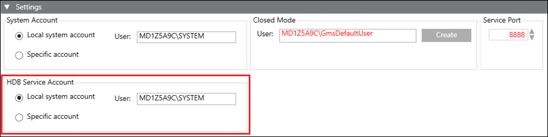
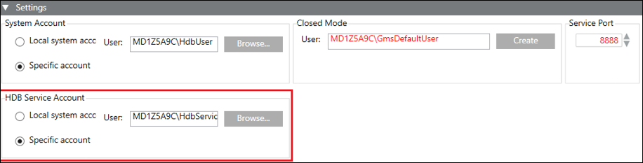

HDB Service Account Settings
Before creating the HDB, it is recommended to check and, if required, configure the HDB Service Account, by changing the default. However, you may edit them after creating the HDB. It is also recommended to have the HDB Service Account different than the System Account.
The HDB Service Account Settings allow you to specify the user that internally runs the Siemens GMS HDB Service and is the HDB service user, see Configure the HDB Service Account in System Settings Procedures. Using this user, the HDB is accessed for maintenance operations.
HDB Service Account contains the following two options:
- Local system account (default selection): The local system account option sets the default, read-only value [Machine name\SYSTEM].
- Specific account: Using the Specific account option, you can change the default value (user). If you change the default, you must provide the valid password and confirm it. Changing the default (SYSTEM) internally changes the history database’s HDB service user. This displays in red when you select the HDB. You must edit the HDB, which internally syncs the HDB service user.
- The Siemens GMS HDB Service gets configured in Windows to start under this specific account. The changed user is set as the HDB service user.
- Note that the user is set for all the HDBs. If you change the HDB Service Account user after creating the HDB, it displays in red in the Security expander of the Historic Databases tab, after you select the HDB node in the SMC tree. This indicates that it must be adapted by stopping and editing the history database.

